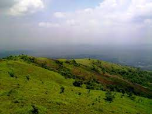

The Kadalundi Nagaram

The Kadalundi Nagaram tip: The Kadalundi Bird Sanctuary or the Kadalundi Nagaram, is definitely one of the best places to visit in Malappuram. It sits right at the spot where River Kadalundi Puzha flows into the Arabian Sea. Easily accessible from Malappuram and Kozhikode, the bird sanctuary is host to about 100 species of native birds, and about 60 species of migratory birds.
The Kadalundi Nagaram
Kodikuthimala Tip: Another attraction of Malappuram that is often compared to the famous town of Ooty, Kodikuthimala is definitely a sight for the sore eyes. A hill station of Kerala, the place is perched on a height of about 522 m above sea level, and is the highest point in the Amminikkadan hills.
Kodikuthimala
